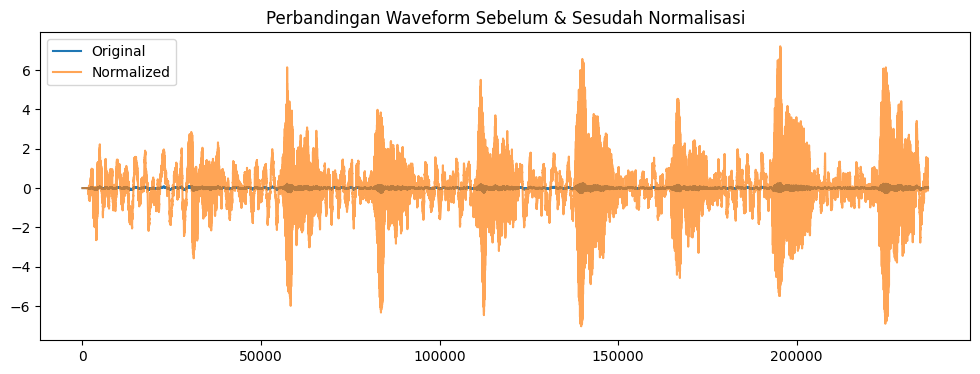

Data Preparation#
Import Library#
import numpy as np
import pandas as pd
import matplotlib.pyplot as plt
from aeon.datasets import load_classification
from sklearn.model_selection import train_test_split
from sklearn.preprocessing import StandardScaler
Load Dataset#
X_train, y_train = load_classification(
name="DucksAndGeese",
split="train",
extract_path="../data",
load_equal_length=False
)
X_test, y_test = load_classification(
name="DucksAndGeese",
split="test",
extract_path="../data",
load_equal_length=False
)
print("Train shape:", X_train.shape)
print("Test shape :", X_test.shape)
Train shape: (50, 1, 236784)
Test shape : (50, 1, 236784)
Verifikasi Tidak Ada Missing Value#
print("NaN di X_train:", np.isnan(X_train).sum())
print("NaN di X_test :", np.isnan(X_test).sum())
NaN di X_train: 0
NaN di X_test : 0
Visualisasi Sebelum & Sesudah Normalisasi#
plt.figure(figsize=(12,4))
plt.plot(X_train[0][0], label="Original")
plt.plot(X_train_norm[0][0], label="Normalized", alpha=0.7)
plt.legend()
plt.title("Perbandingan Waveform Sebelum & Sesudah Normalisasi")
plt.show()

Split Train = Train & Validation#
Split 80% train – 20% validation
X_tr, X_val, y_tr, y_val = train_test_split(
X_train_norm,
y_train,
test_size=0.2,
random_state=42,
stratify=y_train
)
print("Train final :", X_tr.shape)
print("Validation :", X_val.shape)
Train final : (40, 1, 236784)
Validation : (10, 1, 236784)
Verifikasi Distribusi Kelas Setelah Split#
def print_distribution(y, title):
labels, counts = np.unique(y, return_counts=True)
print(title)
for l, c in zip(labels, counts):
print(f"{l}: {c}")
print()
print_distribution(y_tr, "Distribusi Train")
print_distribution(y_val, "Distribusi Validation")
print_distribution(y_test, "Distribusi Test")
Distribusi Train
black-bellied_whistling_duck: 8
canadian_goose: 8
greylag_goose: 8
pink-footed_goose: 8
white-faced_whistling_duck: 8
Distribusi Validation
black-bellied_whistling_duck: 2
canadian_goose: 2
greylag_goose: 2
pink-footed_goose: 2
white-faced_whistling_duck: 2
Distribusi Test
black-bellied_whistling_duck: 10
canadian_goose: 10
greylag_goose: 10
pink-footed_goose: 10
white-faced_whistling_duck: 10
3.1 Normalisasi Sinyal#
def zscore_normalize(signal):
mean = np.mean(signal)
std = np.std(signal)
return (signal - mean) / (std + 1e-8)
x = X_train[0][0]
x_norm = zscore_normalize(x)
print("Before:", np.mean(x), np.std(x))
print("After :", np.mean(x_norm), np.std(x_norm))
Before: 5.0382269563103935e-05 0.0357001264313538
After : 4.321159957997771e-18 0.9999997198890256
X_train_norm = np.array([
zscore_normalize(x[0]) for x in X_train
]).reshape(X_train.shape)
X_test_norm = np.array([
zscore_normalize(x[0]) for x in X_test
]).reshape(X_test.shape)
print("Normalisasi selesai")
Normalisasi selesai
3.2 Downsampling#
import librosa
TARGET_SR = 16000
ORIGINAL_SR = 44100
x_ds = librosa.resample(
x_norm,
orig_sr=ORIGINAL_SR,
target_sr=TARGET_SR
)
print("Length after downsampling:", len(x_ds))
Length after downsampling: 85909
3.3 Feature Extraction#
Fitur |
Jumlah |
Deskripsi |
|---|---|---|
MFCC |
13 |
Karakteristik spektral suara |
Zero Crossing Rate |
1 |
Kecepatan perubahan sinyal |
RMS Energy |
1 |
Intensitas suara |
Spectral Centroid |
1 |
Kecerahan suara |
def extract_features(signal, sr=16000):
features = []
# MFCC
mfcc = librosa.feature.mfcc(y=signal, sr=sr, n_mfcc=13)
mfcc_mean = np.mean(mfcc, axis=1)
features.extend(mfcc_mean)
# ZCR
zcr = np.mean(librosa.feature.zero_crossing_rate(signal))
features.append(zcr)
# RMS
rms = np.mean(librosa.feature.rms(y=signal))
features.append(rms)
# Spectral Centroid
centroid = np.mean(librosa.feature.spectral_centroid(y=signal, sr=sr))
features.append(centroid)
return np.array(features)
feat = extract_features(x_ds)
print("Feature shape:", feat.shape)
print(feat)
Feature shape: (16,)
[-3.03277749e+01 4.00774343e+01 9.66616907e+01 6.28365968e+01
4.14131158e+00 3.07694526e+01 1.42954671e+01 -1.71178020e+00
-5.15671574e+00 9.42606799e+00 -2.54702141e+00 -6.32606819e+00
1.37829476e+01 1.57386416e-01 9.18488979e-01 2.15745077e+03]
3.4 Ekstraksi fitur TRAIN untuk semua data#
X_feat = []
y_feat = []
for i in range(len(X_train)):
signal = X_train[i][0]
signal = zscore_normalize(signal)
signal = librosa.resample(
y=signal,
orig_sr=44100,
target_sr=16000
)
features = extract_features(signal)
X_feat.append(features)
y_feat.append(y_train[i])
X_feat = np.array(X_feat)
y_feat = np.array(y_feat)
print(X_feat.shape)
(50, 16)
3.5 Ekstraksi fitur TEST#
# Membuat array fitur dan label untuk TEST
X_feat_test = []
y_feat_test = []
for i in range(len(X_test)):
signal = X_test[i][0] # Ambil sinyal dari X_test
signal = zscore_normalize(signal) # Normalisasi z-score
# Opsional resampling jika ingin disesuaikan dengan TRAIN
signal = librosa.resample(
y=signal,
orig_sr=44100,
target_sr=16000
)
# Ekstraksi fitur menggunakan fungsi extract_features yang sama
features = extract_features(signal)
X_feat_test.append(features)
y_feat_test.append(y_test[i])
# Konversi ke numpy array
X_feat_test = np.array(X_feat_test)
y_feat_test = np.array(y_feat_test)
print(X_feat_test.shape)
(50, 16)
3.6 Train / Validation Split#
X_train_final, X_val, y_train_final, y_val = train_test_split(
X_feat, # fitur train hasil ekstraksi
y_feat, # label train
test_size=0.2,
random_state=42,
stratify=y_feat # agar distribusi kelas tetap seimbang
)
print("Train final shape:", X_train_final.shape)
print("Validation shape:", X_val.shape)
Train final shape: (40, 16)
Validation shape: (10, 16)
3.7 Standardisasi fitur#
scaler = StandardScaler()
X_train_final_scaled = scaler.fit_transform(X_train_final)
X_val_scaled = scaler.transform(X_val)
X_test_scaled = scaler.transform(X_feat_test) # gunakan fitur test yang sudah diekstraksi
# Standardisasi fitur
mfcc_cols = [f"mfcc{i+1}" for i in range(13)]
feature_cols = mfcc_cols + ["zcr", "rms", "centroid"] # total 16 fitur
df_train = pd.DataFrame(X_train_final_scaled, columns=feature_cols)
df_train["label"] = y_train_final
df_val = pd.DataFrame(X_val_scaled, columns=feature_cols)
df_val["label"] = y_val
df_test = pd.DataFrame(X_test_scaled, columns=feature_cols)
df_test["label"] = y_feat_test # label test
print("Contoh data train:")
print(df_train.head())
Contoh data train:
mfcc1 mfcc2 mfcc3 mfcc4 mfcc5 mfcc6 mfcc7 \
0 0.539017 -0.949161 1.135375 1.506132 -0.468704 0.307521 0.638655
1 1.536679 0.590696 0.766747 0.328454 1.088302 0.394573 0.988120
2 1.249843 0.026736 -1.330608 -0.372341 0.143090 0.854917 -1.300501
3 -1.815987 1.304317 0.443364 -0.549747 -0.064497 -0.551112 0.180480
4 -0.092758 -0.715671 -0.410989 0.848762 1.169403 0.183659 -0.326187
mfcc8 mfcc9 mfcc10 mfcc11 mfcc12 mfcc13 zcr \
0 -0.051023 0.150237 1.269368 -0.861989 0.976513 1.703382 1.098734
1 0.701457 0.052172 -0.311410 -0.089043 -0.002237 -0.250600 -0.399321
2 0.579948 1.763459 -0.921161 -2.589722 -0.824911 -1.007694 -0.349004
3 -0.417936 -0.823769 -1.508067 -0.899350 -1.356602 -0.996021 -1.119913
4 0.476016 -0.212572 -0.855288 -0.422901 -0.297941 -0.764600 0.433529
rms centroid label
0 1.079191 1.223952 black-bellied_whistling_duck
1 -0.187258 -0.082658 greylag_goose
2 1.405728 -0.469772 pink-footed_goose
3 -2.299909 -1.164089 canadian_goose
4 -0.988410 0.430449 white-faced_whistling_duck
Simpan fitur dan label#
import numpy as np
import os
os.makedirs("data/processed", exist_ok=True)
# Simpan fitur dan label
np.save("data/processed/X_train_final_scaled.npy", X_train_final_scaled)
np.save("data/processed/y_train_final.npy", y_train_final)
np.save("data/processed/X_val_scaled.npy", X_val_scaled)
np.save("data/processed/y_val.npy", y_val)
np.save("data/processed/X_test_scaled.npy", X_test_scaled)
np.save("data/processed/y_test.npy", y_feat_test)